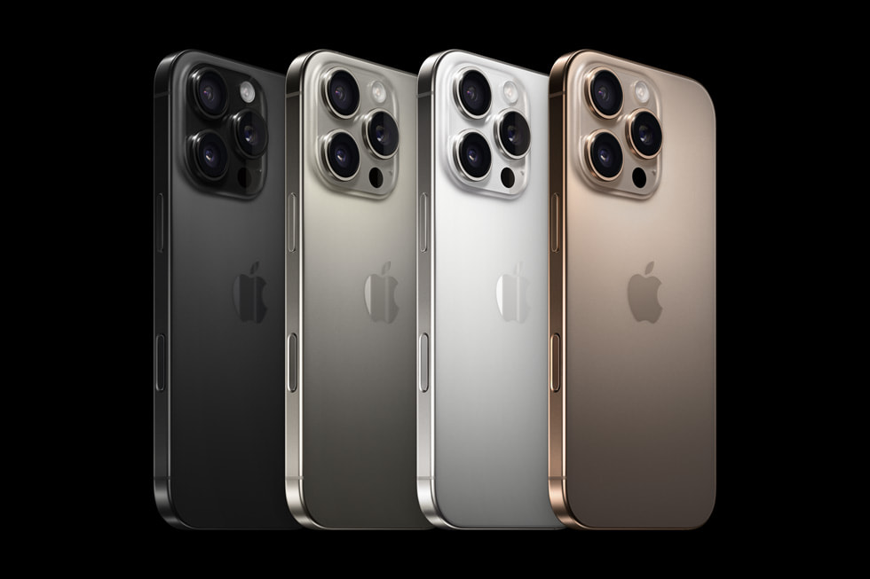

The Iphone 16 Pro Max
Is the phone a good fit for you?
The
Iphone 16 Pro Max
is the most recent phone to come from Apple, coming in with a brand new ios version being the
new ios version 18 bringing alongside it many changes to general functions that have been a
little neglected over past years. The Iphone 16 Pro Max comes standard with a 120 hz and a 6.9
inch screen. Although under the screen it gets even more impressive with a new Apple A18 Pro
chipset which features a 6 core cpu which will be more than enough for anything you will need to
do.
Storage
-
- This new apple iphone has a A18 Pro chip, These chips have a built on second-generation with 3-nm process and smaller transistors
- This high tech Iphone 16 has 6- core CPU with four performance core with efficiency
- An upgraded 16-core neutral engine made for running large generative models
- A improved memory subsystem that comes with 17% more memory bandwidth
Camera
-
If there is one noteworthy thing about the iphone it’s always the camera quality and the 16 pro
max is no exception to this rule boasting a powerful rear camera with a
48 MP sensor , an f-stop of 2.8, 120mm
. Which may all sound like gibberish nonsense but most modern dslr cameras have around these
same specifications. And we cannot leave out the cinema camera this phone has also paaged in
being able to record at 4k quality @120 fps or at 1080p it can shoot up to 240 fps

- The new Iphone 16 pro max has a whole 6 inches on the model before
- The actual size is 6.42 x 3.06 x 0.32 inches where the older one is 5.89 x 2.81 x 0.32 inches
- Also weighs .96 more ounces than the Iphone 16
- All models have a different size. The iphone 16 being the smallest and getting bigger and bigger till now you have the iphone 16 pro max
Picture button
-
Another great feature of the phone is its new picture button, a nice touch screen button on the side of the camera to allow for the user to easily change between certain settings and modes all with one single button. The Camera Control is not a physical button. It's a recessed tactile switch on the right side of the iPhone 16 series that provides the feeling of a cli via a capacitive sensor. With this control you can launch the camera with a press, then quily take a photo with another press. And if you want to start a video, you just long press. But this is just the start of what the Camera Control can do. You can toggle between multiple options — such as
- Zoom
- Exposure
- Depth of field
Battery
-
- The Iphone 16 pro max had a total of 18 hours and 6 minutes of life
- Whereas the Iphone 16 pro oy had 14 hours and 7 minutes
- Then the 16 hours and 29 minutes that the Iphone 16 plus has
- And lastly the poor 12 hours and 43 minutes for the Iphone 16
Pricing
-
Base model starts at $999
When shopping for a new model of phone it is important to also keep price in mind and with the
16 pro and pro max its really simple to handle the pricing of it. For the base model of the 16
pro it starts at $1449 with a 128gb storage drive and for the 16 pro max it comes in at $1749
with a 256 gb storage drive. Although both devices allow for additional storage upgrades.
- 16 pro
- $1449 for 128GB
- $1599 for 256GB
- $1899 for 512GB
- $2199 for 1TB
- 16 pro max
- $1749 for 256GB
- $2049 for 512GB
- $2349 for 1TB
Colors
-
The Iphone comes in a small range of colors, these colors being.

- Bla Titanium
- White Titanium
- Natural Titanium
- Desert Titanium
- This color scheme is great for most users, even though they may be kinda boring the colors will fit well with the items they already have. The neutral pallet will make the customers stress less because of the simple color options fitting very well in their routine.
Final thoughts
-
In conclusion, the Iphone 16 pro and the pro max both have great features but in the end the extra caash for the pro max will be well worth it. The amount of extra features, the increased storage, the camera quality, the bigger screen, these features are in my opinion make the extra cash for the 16 pro max more worth it.